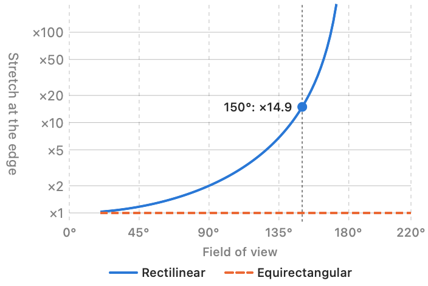

Stereo Dandifier · Help · Links · Support · Privacy
Defish
Takes each eye out of its lens's projection into a flat one, so that the nodes after it may treat every part of the picture alike. The rows of the two eyes stay in agreement at every depth.
Where it goes
Directly after a RAW Develop, or after a JPEG loader whose camera's lens is known; before any Crop or Stereo Align. Its model of the lens is a model of the whole picture the lens made, so each eye must reach it uncut.
The lenses known are fisheyes named in the file, and lenses that have been measured — at present the GoPro HERO3 Black's, at any picture size. An eye from any other lens passes through unaltered.
Projection
Chosen on the node, and the same for every pair:
- Rectilinear — straight lines stay straight. It cannot reach 180°, and its edges stretch ever more as it approaches that.
- Equirectangular — equal angles take equal widths, with the poles to left and right. It holds a fisheye's whole view, even beyond 180°, but upright lines bow outward towards the sides.

Field of view, for each pair
How wide a view to keep: drag the kept part of an eye to set it. Left unset, it is the widest the lens gives in that projection, but no more than 150° in rectilinear, beyond which the edges are stretched more than fourteenfold. It may be set from 20° to 179° (rectilinear) or 220° (equirectangular), and never wider than the lens itself sees.
Actions
- Reset All — returns every pair to its lens's default view.